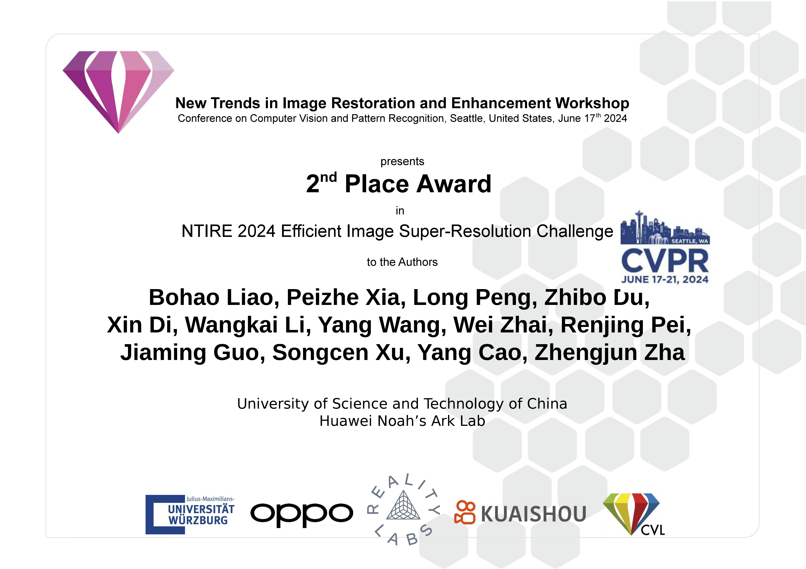

About Me
Hi, I am Long Peng (彭龙), born in 2001. From 2022 to 2024, I studied at USTC as a Master’s student. I am currently pursuing my Ph.D. at the University of Science and Technology of China (USTC) under the supervision of Prof. Zheng-Jun Zha, Associate Prof. Yang Cao, Yang Wang. From October 2023 to September 2024, I interned at Huawei Noah’s Ark Lab, where I was fortunate to be guided by Dr. Wenbo Li and Dr. Renjing Pei.
My research interests [Keywords] include but are not limited to Real-World Super-Resolution [Real SR], Low-Level Vision, and Artificial Intelligence Generated Content [AIGC]. I am particularly focused on developing advanced algorithms to enhance visual quality and exploring the intersection of AIGC and low-level vision tasks.
News
- [Jan. 2025] One paper is accepted by ICLR 2025 (THU-A).
- [Dec. 2024] One paper is accepted by AAAI 2025 (CCF-A).
- [June. 2024] One paper is accepted by NeurIPS 2024 (CCF-A).
* indicates contributed equally and is corresponding author.
-
Long Peng, Wenbo Li, Renjing Pei, Jingjing Ren, Jiaqi Xu, Yang Wang, Yang Cao, Zheng-Jun Zha
The Thirteenth International Conference on Learning Representations (ICLR), 2025
-
Long Peng, Yang Wang, Xin Di, Peizhe Xia, Xueyang Fu, Yang Cao, Zheng-Jun Zha
AAAI Conference on Artificial Intelligence, 2025.
-
Long Peng, Yang Cao, Yuejin Sun, Yang Wang
IEEE Transactions on Multimedia (TMM), 2024
-
Long Peng, Yang Cao, Renjing Pei, Wenbo Li, Jiaming Guo, Xueyang Fu, Yang Wang, Zheng-Jun Zha
Under Review, 2024.
-
 Preprint
Preprint
Long Peng, Wenbo Li, Jiaming Guo, Xin Di, Haoze Sun, Yong Li, Renjing Pei, Yang Wang, Yang Cao, Zheng-Jun Zha
Under Review, 2024.
-
Long Peng*, Xin Di*, Zhanfeng Feng, Wenbo Li, Renjing Pei, Yang Wang, Xueyang Fu, Yang Cao, Zheng-Jun Zha
Under Review, 2025.
-
Di, Xin *, Long Peng *, Peizhe Xia, Wenbo Li, Renjing Pei, Yang Cao, Yang Wang, Zheng-Jun Zha (*Co-first author). Student Project Leader.
Under Review, 2024.
-
Peizhe Xia*, Long Peng *, Xin Di, Renjing Pei, Yang Wang, Yang Cao, Zheng-Jun Zha (*Co-first author). Student Project Leader.
Under Review, 2024.
-
Yuhong He *, Long Peng *, Lu Wang, Jun Cheng (*Co-first author). Work done during undergraduate thesis.
IEEE International Conference on Acoustics, Speech and Signal Processing (ICASSP), 2024.
-
Haodian Wang*, Long Peng*, Yuejin Sun, Zengyu Wan, Yang Wang, Yang Cao (*Co-first author)
IEEE Transactions on Artificial Intelligence (TAI), 2023
-
Yang Wang*, Long Peng*, Liang Li, Yang Cao, Zheng-Jun Zha (*Co-first author, First student author)
IEEE/CVF Conference on Computer Vision and Pattern Recognition (CVPR), 2023
-
Long Peng, Aiwen Jiang, Qiaosi Yi, Mingwen Wang
IEEE Signal Processing Letters (SPL), 2020
-
Jingjing Ren, Wenbo Li, Haoyu Chen, Renjing Pei, Bin Shao, Yong Guo, Long Peng, Fenglong Song, Lei Zhu
Neural Information Processing Systems, 2024
Competition
-

Organized by CVPR2024
NTIRE 2024 Efficient Image Super-Resolution Challenge. Runner-up Winner
-
Organized by CVPR2024
Real-Time 4K Super-Resolution of Compressed AVIF Images. Runner-up Winner
Honors
- National Scholarship (Ranking 1/358), 2020
- Zhiming Xiong Scholarship (Ranking 10/200,000), 2020
- Top Ten Student Scholarship (Ranking, 10/200,000), 2021
Services
Reviewers
- ACM MM 2024, NeurIPS 2024, CVPR 2025, ICLR 2025, ICML 2025.
Memberships:
- IEEE Student Member, Chinese Society of Image and Graphics (CSIG) Student Member.